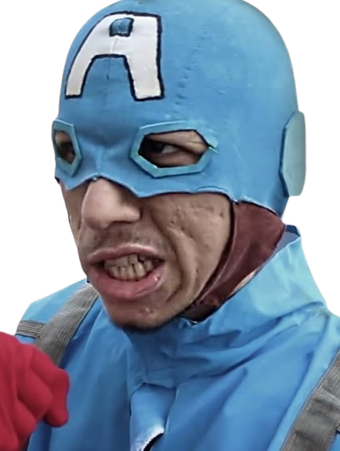

O Capitão América da Deep Web é um personagem fictício que, assim como seu homônimo dos quadrinhos da Marvel Comics, é um símbolo de justiça e patriotismo. Sua história começa quando um grupo de hackers conhecidos como os "Vingadores da Deep Web" descobre um arquivo secreto que contém informações sobre um experimento militar ultra-secreto que buscava criar um supersoldado. Utilizando suas habilidades de programação, os Vingadores da Deep Web conseguem decodificar o arquivo e obter todas as informações necessárias para criar o que seria o Capitão América da Deep Web. Utilizando tecnologia de ponta e materiais de baixo custo, eles constroem um uniforme e um escudo que lembram os do personagem original dos quadrinhos. O Capitão América da Deep Web é um vigilante que luta contra os crimes cibernéticos e a corrupção na internet. Ele utiliza suas habilidades de programação para invadir sites e descobrir informações que possam ajudar a desmascarar criminosos virtuais. Apesar de não possuir habilidades sobrehumanas como seu homônimo dos quadrinhos, ele é altamente treinado em artes marciais e possui uma inteligência aguçada que o permite enfrentar inimigos muito mais poderosos do que ele. Assim como o Capitão América original, o Capitão América da Deep Web é um símbolo de esperança e justiça, inspirando outros a lutar pela liberdade e pelos direitos civis na internet. Seu legado continua a inspirar a luta contra os perigos e as ameaças da Deep Web, mostrando que mesmo em um ambiente cheio de obscuridade e perigo, há sempre um caminho para a luz.

Capitão América
